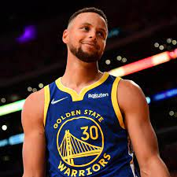

Wardell Stephen Curry II (born March 14, 1988) is an American professional basketball player for the Golden State Warriors of the National Basketball Association (NBA). Widely regarded as one of the greatest basketball players of all time, and as the greatest shooter in NBA history,[2] Curry is credited with revolutionizing the sport by inspiring teams and players to more frequently utilize the three-point shot.[3][4][5] An eight-time NBA All-Star and eight-time All-NBA selection, including four times on the first team, he has been named the NBA Most Valuable Player (MVP) twice, has won four NBA championships, an NBA Finals MVP Award, and an NBA All-Star Game MVP Award.
Curry is the son of former NBA player Dell Curry and the older brother of current NBA player Seth Curry. He played college basketball for the Davidson Wildcats, where he set the all-time scoring record for Davidson and the Southern Conference, was twice named conference player of the year, and set the single-season NCAA record during his sophomore year for most three-pointers made. Curry was selected by the Warriors with the seventh overall pick in the 2009 NBA Draft.